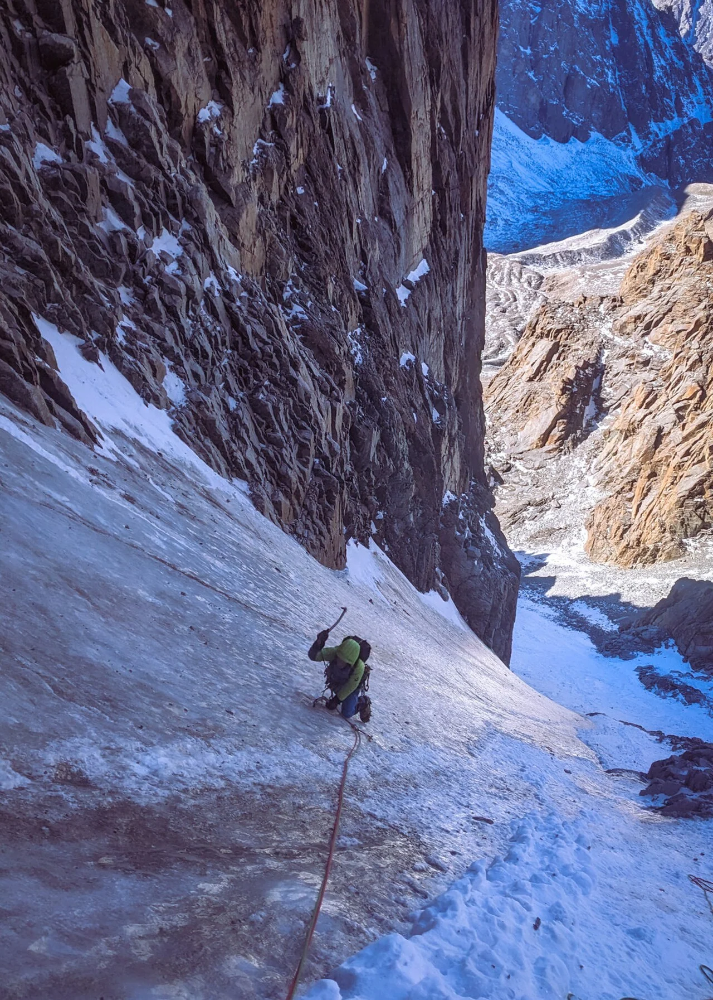

G?rsel: AmandineM / Wikimedia Commons, CC BY 3.0.

Peter Mortimer ve Nick Rosen'in yönettiği 2021 yapımı The Alpinist, Kanadalı dağcı Marc-André Leclerc'i takip ediyor. Leclerc, çoğu zaman tek başına ve büyük ölçüde kameralardan uzakta, zorlu dağ rotalarına tırmanmasıyla tanınıyordu.
Film, Patagonya ve Kuzey Amerika'daki tırmanışlarını izlerken onun risk anlayışını, doğayla kurduğu ilişkiyi ve geleneksel şöhret beklentilerinden uzak yaşamını da anlatıyor. Dağcılığın fiziksel zorluğunun yanında, tırmanışları çevreleyen belirsizlik ve yalnızlığı da öne çıkarıyor.